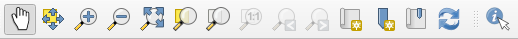
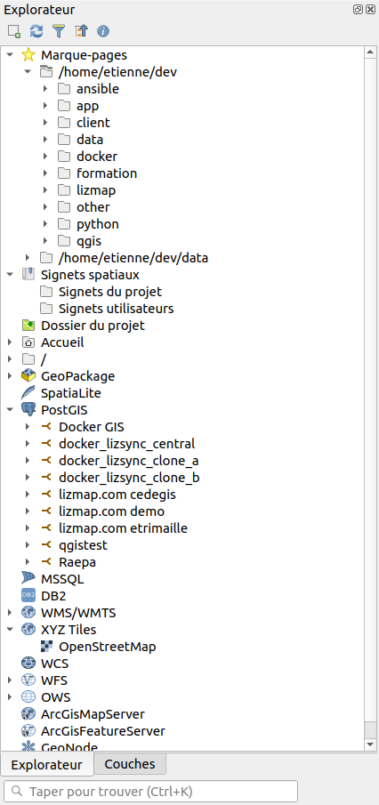
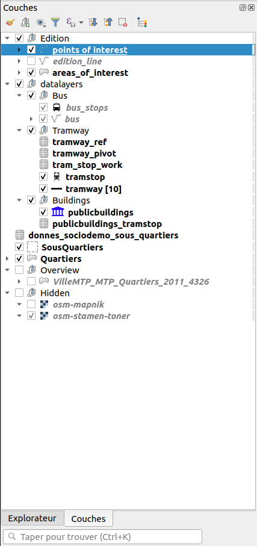
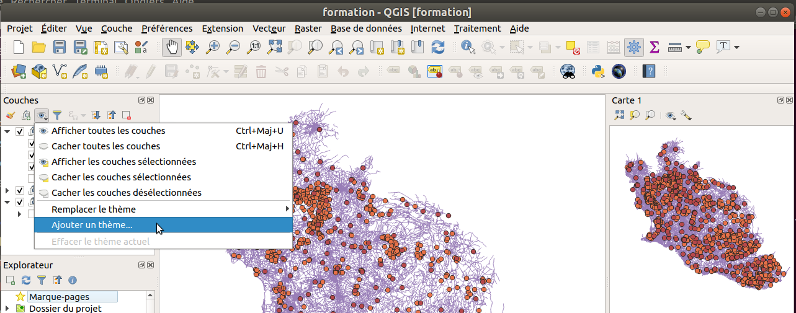
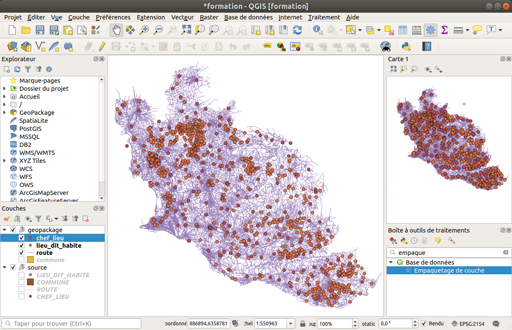
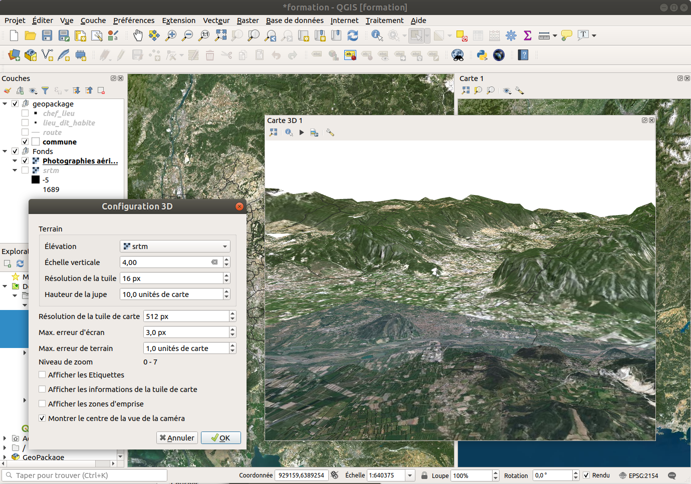
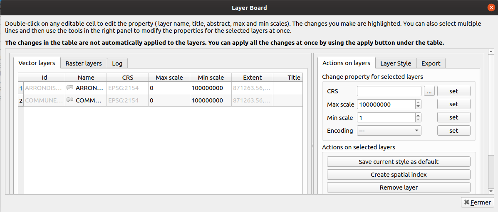
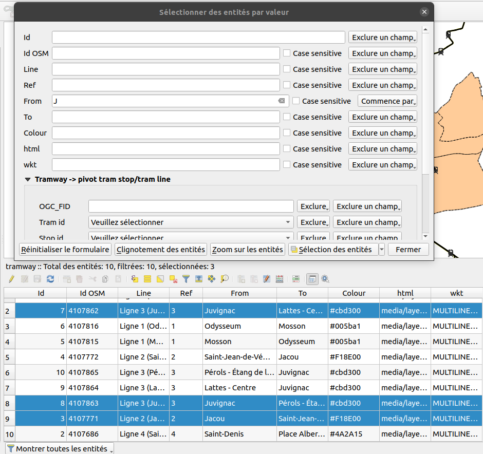

Ajout de couches et organisation de la légende
Documentation
- https://docs.qgis.org/3.10/fr/docs/user_manual/managing_data_source/index.html
- https://docs.qgis.org/3.10/fr/docs/user_manual/introduction/general_tools.html#label-legend
Pâques avant l'heure
Dans certains logiciels, il existe des oeufs de Pâques (Easter Egg).
Nous allons utiliser l'un d'entre eux pour ajouter notre première couche dans QGIS.
Taper world dans la barre des coordonnées en bas et regardons l'utilisation de la barre d'outils de navigation.

Vecteurs

- À l'aide de l'icône
plusdans la barre d'outil ci-dessusSource de données, ajoutons une coucheVecteurde typeFichier.H_OSM_ADMINISTRATIF / COMMUNE.shp
- Pour info, dans les barres d'outils, les étoiles jaunes signifient la création de nouvelle couche. Dans notre cas, nous souhaitons donc bien l'ajout d'une couche existante.
- Enregistrer le projet
Projet->Enregistrer sous...et mettez le dans le dossierdatacontenant les données. au formatQGIS(extension.qgs). - Désormais, l'aide du panneau
Explorateur, dansDossier du projet:- Charger
A_OSM_RESEAU_ROUTIER / ROUTE.shp - Charger
F_OSM_VEGETATION / ZONE_VEGETATION.shp - Charger
H_OSM_ADMINISTRATIF / CHEF_LIEU.shp - Charger
I_OSM_ZONE_ACTIVITE / PAI_INDUSTRIEL_COMMERCIAL.shp
- Charger
- Notons que le glisser/déposer fonctionne aussi.
- Nous pouvons faire un clic droit puis
Propriétéspour ouvrir la configuration de la couche.
Encodage
- Si il y a des problèmes d'accents, dans l'onglet
Source, essayer :System,latin1,ISO 8859-1,CP-1252
-
Petites explications sur les encodages :
Unicode: jeu de caractères codés dit « universel » qui permet de remplacer les pages de codes nationales. Comprend un répertoire très étendu de caractères compatible avec tous les alphabets. Il est en évolution constante (une version en juin 2014) avec plus de 100 000 caractères.UTF-8est le codage international le plus utilisé (en particulier sur le web) compatible avec Unicode. Il est supporté par tous les navigateurs web et par tous les systèmes d’exploitation récents. L’internationalisation et la portabilité font naturellement recommander ce codage (Permet de représenter des caractères qui n’existent pas en latin-1).ISO 8859-1ouLatin-1: principalement utilisé par Windows pour les pays occidentaux, il intègre de nombreux caractères spéciaux comme é, è, à, ç, É, etc, mais pas €,œ.CP-1252ouWIN 1252: extension d’ISO 8859-1 ; initié dans les années 1990, il ajoute quelques caractères particuliers à Latin-1 comme €,œ, etc.ISO-8859-15(ou latin9) est également très proche. Il ajoute au 88959-1 entre autres le caractère de l'euro (€) et les caractères Œ, œ et Ÿ qui manquaient pour l'écriture du français, les caractères Š et š qui manquaient pour l'écriture du tchèque. Il enlève en échange quelques caractères peu utilisés.
Rasters
Fichier MNT
Pour rappel, un fichier MNT veut dire Modèle Numérique de Terrain, c'est à dire un fichier comportant des informations sur l'altitude.
- À l'aide du bouton
Source de données, ajouter la couche de typeRastercontenu dans le dossiersrtm.
WMS de l'IGN
- À l'aide du bouton
Source de données, ajouter une connexionWMS:- Nom :
IGN WMTS - URL :
https://wxs.ign.fr/choisirgeoportail/geoportail/wmts?SERVICE=WMTS&REQUEST=GETCAPABILITIESAjouter des flux provenant de l'IGN en utilisant cette clé gratuitechoisirgeoportail. - Pour votre information : https://geoservices.ign.fr/blog/2018/09/06/acces_geoportail_sans_compte.html
- Nom :
À l'aide d'un plugin
- À l'aide de l'extension
QuickMapServicesdans le gestionnaire des extensions Python. - L'autre extension historique
OpenLayersn'est pas forcément recommandée, surtout lors de l'impression. - Dans sa configuration, cliquer sur le bouton
Obtenir le pack des contributeurs.
À l'aide du panneau explorateur
- Une couche de l'IGN
- Une couche XYZ

Manipulation de la légende
Dans le panneau à gauche, vous remarquez la légende, avec sa barre d'outils.

Ce panneau nous permet de faire plusieurs actions: * ré-ordonner les couches avec une ordre logique : ponctuel, linéaire, polygone, raster * masquer/afficher des couches * faire des groupes
Utiliser les thèmes de couches
Un thème de couche est caractérisé par un nom et permet de sauvegarder:
- l'état des couches cochées dans la légende
- les styles actifs de chaque couche
Étapes:
- Cocher/décocher les couches pour obtenir le réglage souhaité
- Cliquer sur le bouton oeil de la barre d'outil au-dessus du panneau Couches
- Choisir l'item Ajouter un thème
- Choisir un nom et valider

Une fois un ou plusieurs thèmes enregistrés, on peut basculer facilement de l'un à autre thème via le bouton oeil.
Les thèmes peuvent être utilisés pour gérer les couches affichées dans chaque vue, ainsi que dans chaque carte de chaque composeur d'impression.
Les vues cartes
QGIS3 propose d'afficher plusieurs canevas, appelés vues carte, au lieu d'une seule carte centrale.
- Menu Vue / Nouvelle vue cartographique
- On peut la faire glisser dans l'interface, par exemple dans le panneau de droite
- Par défaut, elle se comporte comme la carte principale: les mêmes couches sont visibles

La vue 3D
La vue 3D permet de draper des données vectorielles ou raster par dessus un modèle numérique de terrain (MNT)
Elle peut aussi représenter des données qui ont une composante d'altitude (Z).

L'extension Layerboard
L'extension LayerBoard permet d'obtenir un tableau récapitulatif des couches qui sont chargées.

Observez les différentes projections.
Enregistrer le projet
- Faire un enregistrement du projet et regarder la taille du fichier.
- Si le fichier comporte l'extension
QGS, vérifiez le contenu du fichier. Un projet ne contient aucune données géographiques. Les données géographiques ne sont pas incluses dans le projet en lui même. Ce ne sont que des liens.
Utilisation des outils

Dans les barres d'outils, chercher les outils suivants :
-
de mesure (longueur, aire, angle) dont l'icône comporte une petite règle.
- Notons pour la mesure de longueur et d'aire la possibilité de choisir entre deux options:
Cartésien, mesure dans le plan X,YEllipsoïdale, mesure en tenant compte de la rotondité de la Terre
- Notons pour la mesure de longueur et d'aire la possibilité de choisir entre deux options:
-
d'identification (d'information) afin d'obtenir des informations sur une entité. Cela liste les attributs :
- de la table attributaire
- et les attributs dérivés (longueur, surface, coordonnées etc)
-
table attributaire :
- Remarquons que comme dans un tableur, le contenu des cellules est aligné sur la droite ou sur la gauche :
- À droite, il s'agit des champs numérique
- À gauche, les champs qui sont des chaînes de caractères
F6permet d'ouvrir la table attributaire, mais attention aux couches lourdes !Shift (Maj) + F6, Shift comme sélection pour ouvrir que les entités sélectionnéesCtrl + F6pour les entités visibles
- Remarquons que comme dans un tableur, le contenu des cellules est aligné sur la droite ou sur la gauche :
-
sélection graphique sur la carte :
- au clic-clic ou un rectangle
- polygone, main levé, rayon
- utilisation de shift pour faire une sélection multiple
-
sélection par valeur qui permet de faire de sélections selon des critères dans la table attributaire, de manière interactive. Plusieurs modes de sélections sont possibles.
